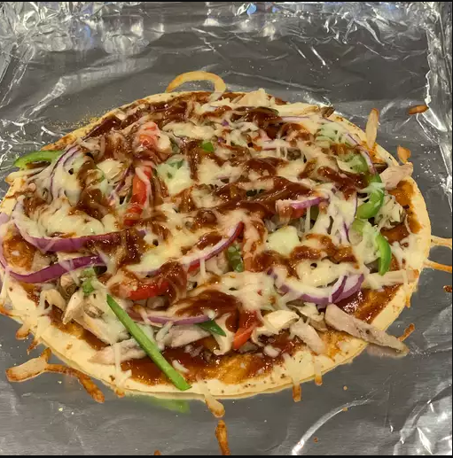

Easy Tortilla Pizza

This tortilla pizza is extremely easy to make.
It is light enough to be a snack, serves well as an appetizer,
or is so good that it can be devoured alone! You can use any sort of topping variation.
The one below is the classic way I usually prepare it but feel free to experiment.
Ingredients
- Tortilla: Use store-bought or homemade soft flour tortillas.
- Oil: Brush the tortillas with olive oil before you season them.
- Seasonings: These tortilla pizzas are seasoned with garlic powder, black pepper, and dried oregano.
- Tomato sauce: Use store-bought or homemade tomato sauce.
- Toppings: op the tortilla pizzas with sliced chicken breast, green bell pepper, and green onions. Of course, you can customize the toppings to suit your taste.
- Cheese: Finish the pizzas with mozzarella cheese.
How to make:
- Brush the tortilla with olive oil, season, and bake.
- Top with tomato sauce and toppings. Sprinkle it with cheese.
- Bake again until the cheese is melted, then season it with oregano.
- Enjoy!